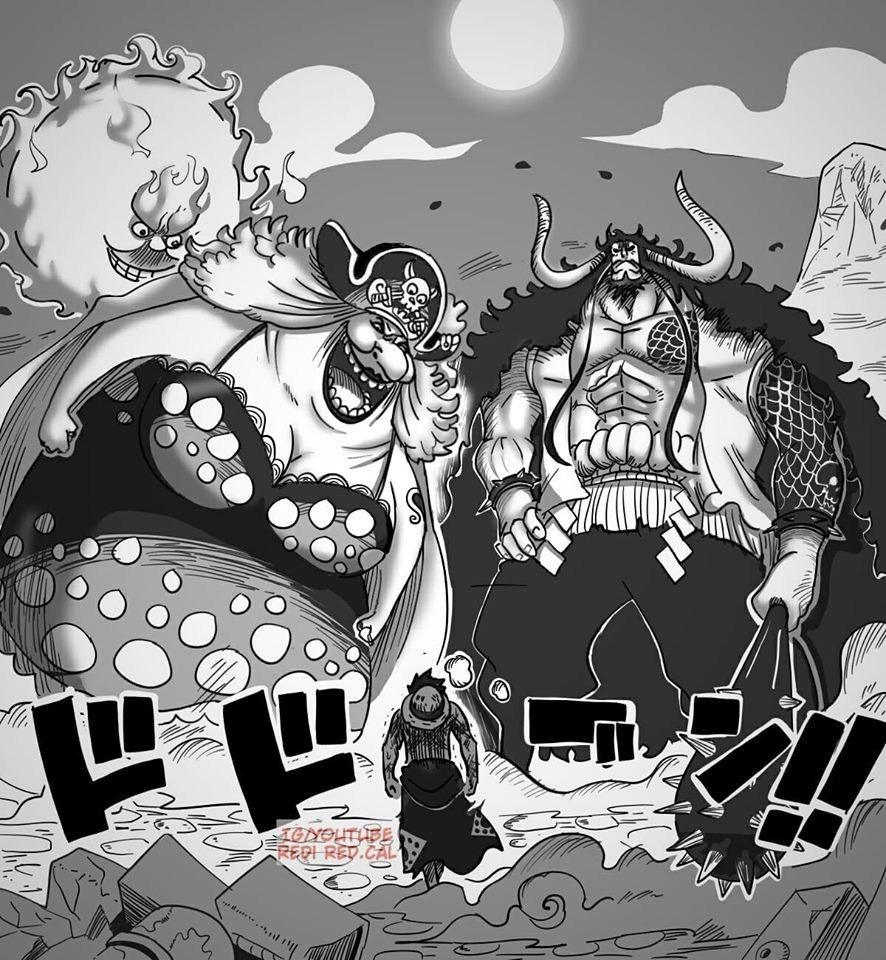

Episódios: 751 a 1069 (atualmente)
Esta saga começa com o arco filler Silver Mine, que faz a ligação do anime com o filme One Piece Film: Gold. Contudo, logo voltamos a acompanhar os acontecimentos depois da derrota de Doflamingo. Os Chapéus de palha, Trafalgar Law, Kin'emon e Kanjuro seguem para Zou, terceira ilha que a tripulação de Luffy visita no Novo Mundo. No local, eles descobrem que Sanji acabou se envolvendo em complicações pessoais e políticas. Além disso, a ilha está cercada pelos Piratas Beasts. E o que pode parecer apenas outra missão, na verdade, pode revelar a localização do One Piece. No arco cânone seguinte, Luffy, Nami, Tony Tony Chopper, Brook, e os Pekoms seguem para a ilha Whole Cake. O grupo tenta resgatar Sanji e salvá-lo de seu casamento arranjado com Charlotte, para finalizar a aliança política entre a família da noiva e os Vinsmoke. Contudo, a trama fica cada vez mais complexa com o passar dos episódios, e agora o grupo de resgate de Sanji precisa derrotar a Grande Mãe dos Quatro Imperadores. As ações dos Chapéus de Palha contra a Grande Mãe tem consequências por todo o mundo, e a realeza se reúne para um conselho mundial formado por 50 líderes entre as mais de 170 nações que são afiliadas ao Governo Mundial. Enquanto isso, o Exército Revolucionário se prepara para seu próximo plano. Os eventos deste arco fazem com que a recompensa por Luffy cresça para 1.500.000.000, e o pirata passa a ser considerado o Quinto Imperador do Mar. Im, o misterioso líder do Governo Mundial, captura um dos piratas do Chapéu de Palha. A Aliança Ninja-Pirata-Mink-Samurai começa a recrutar aliados no País Wano, com o objetivo de libertar a nação do controle do shogun Kurozumi Orochi, do Imperador Kaido e sua tripulação, e dos Piratas Beasts. Contudo, o grupo ainda precisa lidar com Os Piratas Grande Mãe, que os seguiu até o País Wano em busca de vingança. É quando a Grande Mãe decide formar uma aliança com Kaido para conquistar o mundo.
